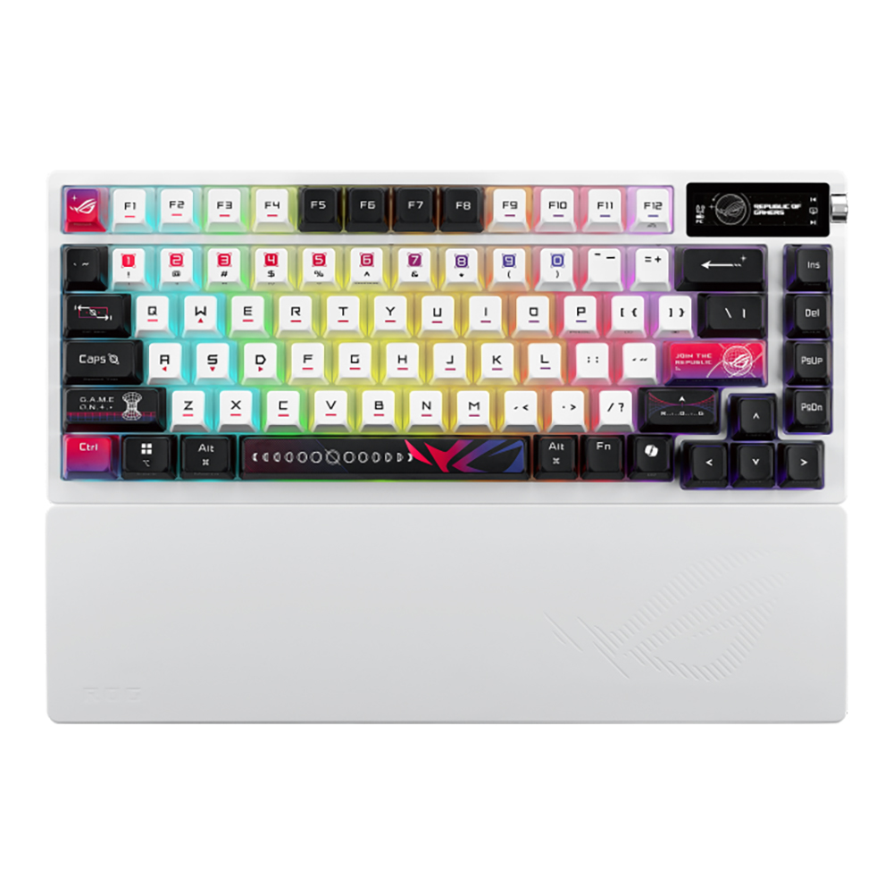

KeyHouse — ร้านคีย์บอร์ดออนไลน์
KeyHouse เริ่มต้นจากกลุ่มคนที่ชอบเล่นคีย์บอร์ดและเบื่อกับการหาข้อมูลสเปกที่กระจัดกระจาย เราจึงรวบรวมคีย์บอร์ดจากหลายแบรนด์มาไว้ในที่เดียว พร้อมจัดข้อมูลให้อยู่ในรูปแบบเดียวกัน ทั้งชนิดสวิตช์ ขนาด การเชื่อมต่อ และคุณสมบัติเด่น เพื่อให้เปรียบเทียบได้จริงก่อนตัดสินใจซื้อ
ปัจจุบันเรามีสินค้ากว่า 50 รุ่นจาก 27 แบรนด์ ครอบคลุมตั้งแต่คีย์บอร์ดราคาประหยัดสำหรับ นักเรียนนักศึกษา ไปจนถึงคีย์บอร์ดแม่เหล็ก (Magnetic Switch) ระดับแข่งขันที่มี Polling Rate 8K ทุกรุ่นเราเขียนคำอธิบายและสเปกจากข้อมูลจริงของผู้ผลิต
ดูสินค้าทั้งหมดของเรา
สิ่งที่เรา ยึดถือ
คัดสินค้าก่อนขาย
เราทดลองใช้งานจริงและคัดเฉพาะรุ่นที่คุ้มค่ากับราคาเท่านั้น
ข้อมูลตรงไปตรงมา
ระบุสเปกตามจริง ไม่ใส่คำโฆษณาเกินจริง เพื่อให้ตัดสินใจได้ถูกต้อง
บริการหลังการขาย
ช่วยเปลี่ยนสวิตช์ ลูบสวิตช์ และตั้งค่าซอฟต์แวร์ให้ฟรีตลอดอายุการใช้งาน
ชุมชนคนรักคีย์บอร์ด
มีกลุ่มพูดคุย แลกเปลี่ยนคีย์แคปและสวิตช์ สำหรับลูกค้าของร้าน
สินค้าในร้านครอบคลุมทุกสไตล์
เราพยายามรักษาสัดส่วนสินค้าให้หลากหลาย ทั้งคีย์บอร์ดสำหรับเล่นเกม สำหรับทำงาน และสำหรับสายคัสตอมที่ชอบเปลี่ยนสวิตช์เอง
เลือกสวิตช์ แบบไหนดี
| ชนิดสวิตช์ | สัมผัสการกด | เสียง | เหมาะกับ |
|---|---|---|---|
| Linear | ลื่นตลอดระยะกด ไม่มีสะดุด | เงียบปานกลาง | เล่นเกม กดรัว |
| Tactile | มีปุ่มสะดุดเล็กน้อยตอนกด | เงียบปานกลาง | พิมพ์งาน เขียนโปรแกรม |
| Clicky | สะดุดชัดเจน | ดัง มีเสียงคลิก | คนชอบเสียงตอบสนอง |
| Magnetic (Hall Effect) | ปรับระยะกดได้ละเอียด มี Rapid Trigger | เงียบถึงปานกลาง | เกมแข่งขัน FPS |
| Membrane | นุ่ม ยวบกว่าแบบแมคคานิคอล | เงียบ | ใช้งานทั่วไป งบประหยัด |
คำถาม ที่พบบ่อย
พร้อมเลือกคีย์บอร์ดตัวใหม่แล้วหรือยัง?
เข้าไปดูสินค้าทั้ง 50 รุ่น พร้อมตัวกรองช่วยค้นหาได้ทันที
ไปหน้าสินค้า